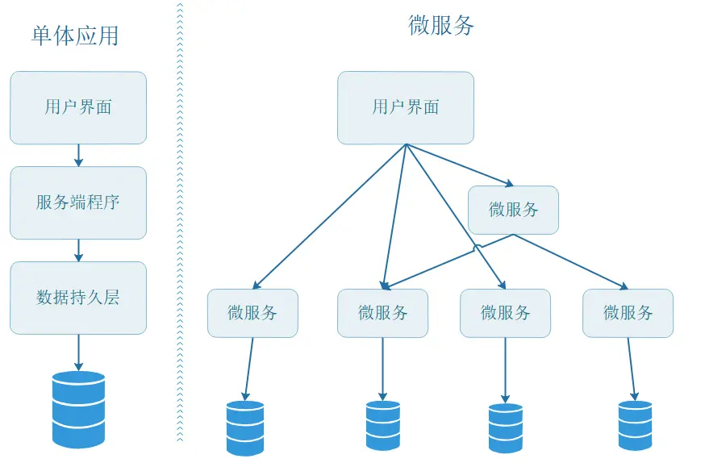
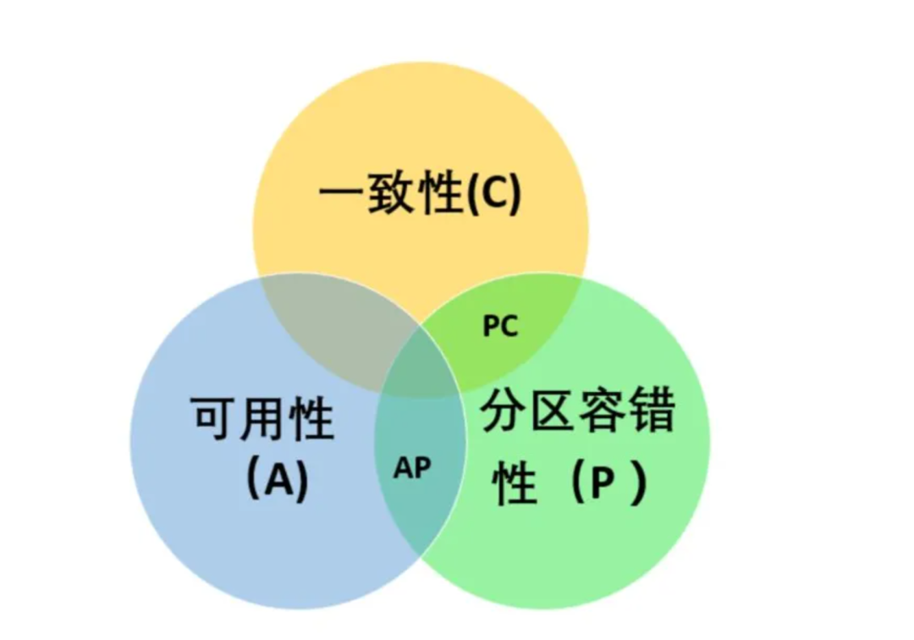
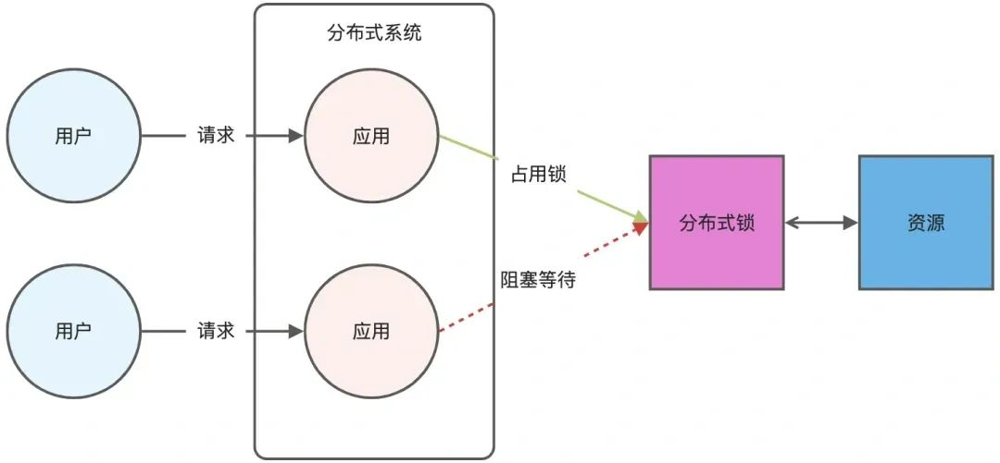
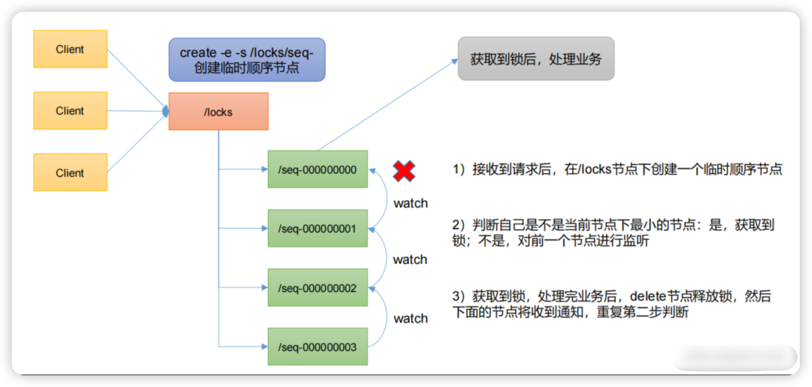
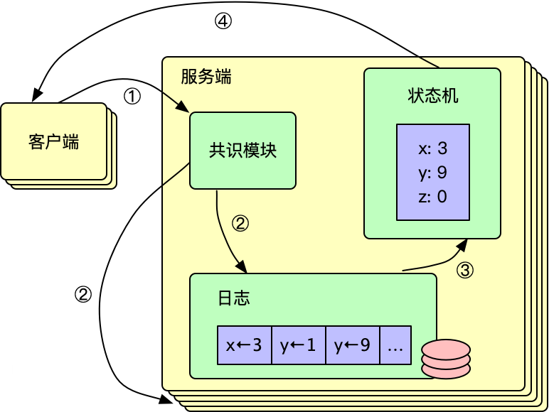
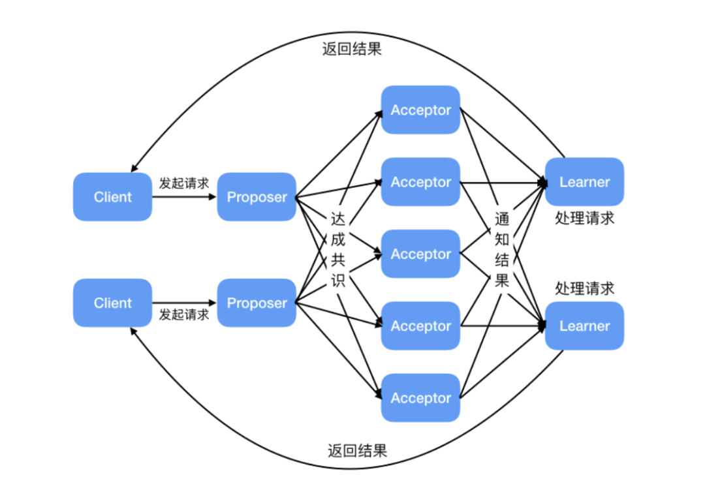

2. 微服务和单体的区别与优势是什么？

- 所有功能模块（如用户管理、订单处理、支付等）集中在一个单一的代码库中，编译为一个可执行文件或服务，共享同一个数据库和资源。单体架构适合业务简单、团队小的场景，优势是开发效率高、性能好，不过随着随着业务增长，代码库臃肿，维护会变的更困难，而且任何修改都可能影响全局，回归测试成本高。
- 将应用拆分为多个独立的、松耦合的小型服务，每个服务专注于单一业务功能，拥有独立的代码库、数据库和进程，通过API（如REST或gRPC）通信。微服务通过解耦服务实现灵活扩展和独立部署，但复杂度高，适合大型系统（如电商平台、社交网络）。
Zookeeper怎么用的？知道ZAB协议吗？
z a b 这个协议我是没有了解过，在我这个项目里面我就是拿它来做，就是做一个注册中心，把它具体的那个 port 和具体的 service 注册在这个 Zookeeper上面。因为我是自己去实现路由层的这一块的，所以我的只是去注册了一个监听事件，然后把 zookeeper 上面如果产生了更新数据的话，我就把这个节点给拉下来，然后更新我的路由层里面的这个缓存数据。
追问：就说你现在这个监听是怎么实现的
答：监听就是用一个 Listener的，然后就去就是它有一个 ZK client，就是在 Java 里面是有一个客户端，然后可以写一个 update 事件，如果有产生 update 事件，它就会感应到这事件，就发到我们的 listener 那里去做具体的handle。然后具体怎么感应啊？我觉得我猜一下，我不是很确定这一块就是zookeeper，他可能会，嗯，发一下自己最新的这个数据，如果他产生更新的话，他就发一下到他注册的这一块，这是一个推送的方式，要么就是我们自己轮询的去拉，就这两种方式。我猜。
刚才讲到推拉，那微博怎么做feed流的？（追问答得很差）
推拉结合是很经典的。
推的话，就是相当于说我们会每次发送一条动态的时候，把这条动态给送到所有的粉丝的信箱里面去，然后粉丝在上线的时候，他就去看查看他的这个信箱
拉的话就是粉丝他自主的去那个他关注了 up 主那里，把他的动态给拉过来。
这个是，但是这种就会有个问题，像是微博大 v 的那种场景，假如说他要给他所有的粉丝给发消息的话，就是会有很大的这个存储的压力，会耗很多空间，因为他要发很多条消息给他所有的这个粉丝的信箱里面去。
嗯，那所以说微博它就采用了一种推拉结合的方式去识别一下哪一些是活跃粉丝，哪一些是非活跃粉丝。然后具体而言，我不知道微博的算法是怎么样，但是我觉得他可以从两个方面来看，一个就是他最近一次的上线时间，如果他很久没上线的话，比如说他一个星期以上没有上线了，那我就认为他是一个非活跃粉丝，那就不发给他了。那如果说而另外一个方法就是看这个他查看的次数，当然这个就要去记录一下这个粉丝查看的历史记录了，可能就会其实也不是很复杂，就是一个计数器而已，然后就去判断他是不是一个活跃粉丝，如果是僵尸粉的话，就让僵尸粉想要看的时候自己来拉就好了。
【开始答不好了】
追问：那你刚刚你有说到就是说储存压力，对吧？嗯，就相当于说他可能推的时候会有很多很大的储存压力。对对对，那什么时候应该用拉呢？
答：每一个 up 主他的粉丝量不能太多，如果他太多的话用推就会不合适，然后让每个粉丝自己来拉，就会这个存储压力就非常小
追问：你觉得推跟拉的优势是什么？
答：拉的优势就是实现很简单，就是你想看的时候自己去获取就好了。那推的优势我觉得就是可以保证他这个每个粉丝他不用自主的去，自主地去原始的那个信箱拉数据，他只要上线就可以看到那个小红点。
一致性怎么做的？
一致性的方法其实就是有一个强一致性和最终一致性。然后像我简历里面之前写的那个使用Seata，它就是用强一致性来执行的，就是说有一个两阶段提交，需要我讲两阶段提交吗？（不用）这是一种实现方法。
嗯，然后像RabbitMQ，它其实就是借助消息队列来实现一个弱一致性。最终一致性。嗯，就是像我们这个场景，就是你发送一个信息过来，然后我会把它发到一个延时队列里面去，就是说这个队列它是会计时的，比如说我们下一个订单你还没有付款，我这个定这个队列就开始计时，如果超过时间还没有付款的话就会放到一个死信队列里面去，然后这个死信队列就会最终去恢复对应我们一开始扣减的库存，这就是实现它最终一致性的方法。
分布式 ID 这里有哪些方案？你之前有调研过，你可以说一下吗？
分布式 ID 它其实有很多种方案，首先就是基于数据库的，是他自增的ID。然后还有像数据库本身有一个号段，但这两种方式都是很容易被其他人比如说猜到我们的业务具体数据量是有多少的，所以一般是不用这种比较简单实现的方案的。
然后还有一些其他的，像 Snowflake 是 Twitter 推出的，应该是就是它会有一个 worker ID，一个时间戳，还有一个随机数，就是来设置这个 worker ID，就是对应的机器生成的机器来设置这个ID。
然后还有一种方法就是 UUID 了，但 UID 它就是无序性更强，而且它很长，不适合存在我们的数据库里面。
然后像我们这个项目里面使用的就是美团的leaf，然后美团 leaf它也有两种模式，一种是号段模式，然后另外一种它也是基于 Snowflake 的，然后我们具体是用 Snowflake 的这种方案，因为为什么呢？号段它其实虽然说美团它是做了一个双号段的 buffer 模式，但仍然是会存在刚才我们说的那种被别人猜到业务量的问题，所以还是选择了 Snowflake 这种方式。然后 Snowflake 美团它是使用了一个弱依赖于 zookeeper 的方式来解决 Snowflake 原先会存在的一个时钟不一致的问题。（一时没想起时钟回退这个词）就大概是这几种方案。
挑一个项目讲项目难点
没讲好，想讲多机并发的，但是后面扯到用MQ，把自己给绕晕了，发现MQ不是用来解决抢分布式锁的竞争问题的
【分布式协议】Raft和Paxos怎么学的？
看论文学的，Simple的那篇
【分布式协议】Raft和Paxos的工程实现有了解吗？
我感觉现在大部分的这一种，这种类似于选举的这种方案，还有维护多机的，像Redis，还有 MySQL 多机，他们其实用的基本上都是这种选举还有 vote 的方法。
【分布式协议】Raft 他什么时候他不可用？
选举的时候不可用
【分布式协议】Paxos有这个问题吗？
Paxos没有选举，是对单值一致性投票。（我不确定，瞎说的）
追问：有没有不可用的时间？没了解过
【网络安全】XSS和CSRF讲一下
XSS就是脚本攻击，跨站脚本攻击，然后 CSRF 是跨站请求攻击。
然后像跨端请求攻击，它主要就是会因为我们基本一般的那种实现认证的方式都是带个cookie，然后他可能就会拿着我们这个 cookie 然后去做一些事情。然后或者是他会导向外站的一个钓鱼网站之类的，然后这个解决方式就有两种，一种是去它的 header 设置一个referer，就是它是从哪一个来源来的，然后第二个就是禁止它导向外链。像我们现在经常设置的就是如果你要导向其它的链接，我就会给你一个提示，相当于把这个风险给转嫁了，如果你自愿过去，那就是你的问题。
然后 XSS 攻击是就是跨站脚本攻击，可能就是在我们的 HTML 里面插入一些，插入一些病毒或者是什么，就是改掉我们原始的 HTML 文件。但这个通常是出现于像是用户论坛或者是评价这种用户可以自己发数据上去的地方。那解决这个方法也是首先是要去过滤一下用户他发的信息，去识别一些敏感的字，比如说像 Javascript 这样子的敏感的关键词。还有去做一个就是纯前端渲染的过程，那它存的时候去后端去做校验，然后再在前端只是去拿数据，然后把它渲染出来而已。
【网络安全】SQL注入说一下
知道。SQL注入就是...（面试官打断了：那就不用了，下一个）
分布式事务的解决方案你知道哪些？
| 方案 | 一致性 | 性能 | 复杂度 | 适用场景 |
|---|---|---|---|---|
| 2PC | 强一致性 | 低 | 中 | 传统数据库、XA协议 |
| 3PC | 强一致性 | 中低 | 高 | 需减少阻塞的强一致场景 |
| TCC | 最终一致性 | 高 | 高 | 高并发业务（支付、库存） |
| Saga | 最终一致性 | 中 | 高 | 长事务、跨服务流程 |
| 消息队列 | 最终一致性 | 高 | 中 | 事件驱动架构 |
| 本地消息表 | 最终一致性 | 中 | 低 | 异步通知（订单-积分） |
- 两阶段提交协议（2PC）：为准备阶段和提交阶段。准备阶段，协调者向参与者发送准备请求，参与者执行事务操作并反馈结果。若所有参与者准备就绪，协调者在提交阶段发送提交请求，参与者执行提交；否则发送回滚请求。实现简单，能保证事务强一致性。存在单点故障，协调者故障会影响事务流程；性能低，多次消息交互增加延迟；资源锁导致资源长时间占用，降低并发性能。适用于对数据一致性要求高、并发度低的场景，如金融系统转账业务。
- 三阶段提交协议（3PC）：在 2PC 基础上，将准备阶段拆分为询问阶段和准备阶段，形成询问、准备和提交三个阶段。询问阶段协调者询问参与者能否执行事务，后续阶段与 2PC 类似。降低参与者阻塞时间，提高并发性能，引入超时机制一定程度解决单点故障问题。无法完全避免数据不一致，极端网络情况下可能出现部分提交部分回滚。用于对并发性能有要求、对数据一致性要求相对较低的场景。
- TCC：将业务操作拆分为 Try、Confirm、Cancel 三个阶段。Try 阶段预留业务资源，Confirm 阶段确认资源完成业务操作，Cancel 阶段在失败时释放资源回滚操作。可根据业务场景定制开发，性能较高，减少资源占用时间。开发成本高，需实现三个方法，要处理异常和补偿逻辑，实现复杂度大。适用于对性能要求高、业务逻辑复杂的场景，如电商系统订单处理、库存管理。
- Saga：将长事务拆分为多个短事务，每个短事务有对应的补偿事务。某个短事务失败，按相反顺序执行补偿事务回滚系统状态。性能较高，短事务可并行执行减少时间，对业务侵入性小，只需实现补偿事务。只能保证最终一致性，部分补偿事务失败可能导致系统状态不一致。适用于业务流程长、对数据一致性要求为最终一致性的场景，如旅游系统订单、航班、酒店预订。
- 可靠消息最终一致性方案：基于消息队列，业务系统执行本地事务时将业务操作封装成消息发至消息队列，下游系统消费消息并执行操作，失败则消息队列重试。实现简单，对业务代码修改小，系统耦合度低，能保证数据最终一致性。消息队列可靠性和性能影响大，可能出现消息丢失或延迟，需处理消息幂等性。适用于对数据一致性要求为最终一致性、系统耦合度低的场景，如电商订单支付、库存扣减。
- 本地消息表：业务与消息存储在同一个数据库，利用本地事务保证一致性，后台任务轮询消息表，通过MQ通知下游服务，下游服务消费成功后确认消息，失败则重试。简单可靠，无外部依赖。消息可能重复消费，需幂等设计。适用场景是异步最终一致性（如订单创建后通知积分服务）。
阿里的seata框架了解过吗？
Seata 是开源分布式事务解决方案，支持多种模式：
- AT模式：是 Seata 默认的模式，基于支持本地 ACID 事务的关系型数据库。在 AT 模式下，Seata 会自动生成回滚日志，在业务 SQL 执行前后分别记录数据的快照。当全局事务需要回滚时，根据回滚日志将数据恢复到事务开始前的状态。
- TCC模式：需要开发者手动编写 Try、Confirm 和 Cancel 三个方法。Try 方法用于对业务资源进行预留，Confirm 方法用于确认资源并完成业务操作，Cancel 方法用于在业务执行失败时释放预留的资源。
- SAGA 模式：将一个长事务拆分为多个短事务，每个短事务都有一个对应的补偿事务。当某个短事务执行失败时，会按照相反的顺序执行之前所有短事务的补偿事务，将系统状态回滚到初始状态。
7. 分布式的 cap理论说一下？
CAP 原则又称 CAP 定理, 指的是在一个分布式系统中, Consistency（一致性）、 Availability（可用性）、Partition tolerance（分区容错性）, 三者不可得兼
- 一致性(C) : 在分布式系统中的所有数据备份, 在同一时刻是否同样的值(等同于所有节点访问同一份最新的数据副本)
- 可用性(A): 在集群中一部分节点故障后, 集群整体是否还能响应客户端的读写请求(对数据更新具备高可用性)
- 分区容忍性(P): 以实际效果而言, 分区相当于对通信的时限要求. 系统如果不能在时限内达成数据一致性, 就意味着发生了分区的情况, 必须就当前操作在 C 和 A 之间做出选择
分布式锁除了redisson，还能怎么实现？
- 基于MySQL：通过 for update 排他锁，对特定数据记录加排他锁。我们可以当做查询到数据时，则获取到分布式锁，接下来执行方法中的逻辑。在方法执行完毕后，提交事务，锁会自动释放。
- 基于 ZooKeeper：利用临时顺序节点来实现分布式锁的获取和释放。
zookerper实现分布式锁和redisson实现分布式的区别？
zookerper 实现的分布式锁是强一致性的，因为它底层的 ZAB协议(原子广播协议), 天然满足 CP，但是这也意味着性能的下降, 所以不站在具体数据下看 Redis 和 Zookeeper, 代表着性能和一致性的取舍
如果项目没有强依赖 ZK, 使用 Redis 就好了, 因为现在 Redis 用途很广, 大部分项目中都引用了 Redis，没必要对此再引入一个新的组件, 如果业务场景对于 Redis 异步方式的同步数据造成锁丢失无法忍受, 在业务层处理就好了
cap是啥？
CAP 原则又称 CAP 定理, 指的是在一个分布式系统中, Consistency（一致性）、 Availability（可用性）、Partition tolerance（分区容错性）, 三者不可得兼

- 一致性(C) : 在分布式系统中的所有数据备份, 在同一时刻是否同样的值(等同于所有节点访问同一份最新的数据副本)
- 可用性(A): 在集群中一部分节点故障后, 集群整体是否还能响应客户端的读写请求(对数据更新具备高可用性)
- 分区容忍性(P): 以实际效果而言, 分区相当于对通信的时限要求. 系统如果不能在时限内达成数据一致性, 就意味着发生了分区的情况, 必须就当前操作在 C 和 A 之间做出选择
redisson对于cap定理的体现是什么？
主要是 ap 模型，牺牲一致性，换取可用性。
Redis Cluster通过数据分片（Sharding）和主从复制（Master-Slave Replication）实现了高可用性和一定的数据冗余。在Redis Cluster中，每个节点都保存了部分数据，并通过复制机制保证数据在多个节点上的可用性。
- 分区容忍性（P）：Redis Cluster天生支持分区容忍性，通过多个节点和分片机制，即使部分节点或网络发生故障，系统仍能继续运行。
- 一致性（C）与可用性（A）的权衡：Redis Cluster在默认情况下更倾向于可用性（A）。在数据复制过程中，Redis采用了异步复制机制，这意味着主节点写入数据后，不会等待所有从节点确认就返回操作成功的结果。这样做提高了系统的响应速度和可用性，但在极端情况下（如主节点宕机且未完成数据同步）可能会导致数据丢失，即牺牲了强一致性（C）。
redis 实现的分布式锁还有什么缺点？红锁是什么？
基于 Redis 实现分布式锁的缺点：
-
超时时间不好设置。如果锁的超时时间设置过长，会影响性能，如果设置的超时时间过短会保护不到共享资源。比如在有些场景中，一个线程 A 获取到了锁之后，由于业务代码执行时间可能比较长，导致超过了锁的超时时间，自动失效，注意 A 线程没执行完，后续线程 B 又意外的持有了锁，意味着可以操作共享资源，那么两个线程之间的共享资源就没办法进行保护了。
-
那么如何合理设置超时时间呢？ 我们可以基于续约的方式设置超时时间：先给锁设置一个超时时间，然后启动一个守护线程，让守护线程在一段时间后，重新设置这个锁的超时时间。实现方式就是：写一个守护线程，然后去判断锁的情况，当锁快失效的时候，再次进行续约加锁，当主线程执行完成后，销毁续约锁即可，不过这种方式实现起来相对复杂。
-
Redis 主从复制模式中的数据是异步复制的，这样导致分布式锁的不可靠性。如果在 Redis 主节点获取到锁后，在没有同步到其他节点时，Redis 主节点宕机了，此时新的 Redis 主节点依然可以获取锁，所以多个应用服务就可以同时获取到锁。
Redis 如何解决集群情况下分布式锁的可靠性？
为了保证集群环境下分布式锁的可靠性，Redis 官方已经设计了一个分布式锁算法 Redlock（红锁）。
它是基于多个 Redis 节点的分布式锁，即使有节点发生了故障，锁变量仍然是存在的，客户端还是可以完成锁操作。官方推荐是至少部署 5 个 Redis 节点，而且都是主节点，它们之间没有任何关系，都是一个个孤立的节点。
Redlock 算法的基本思路，是让客户端和多个独立的 Redis 节点依次请求申请加锁，如果客户端能够和半数以上的节点成功地完成加锁操作，那么我们就认为，客户端成功地获得分布式锁，否则加锁失败。
这样一来，即使有某个 Redis 节点发生故障，因为锁的数据在其他节点上也有保存，所以客户端仍然可以正常地进行锁操作，锁的数据也不会丢失。
Redlock 算法加锁三个过程：
-
第一步是，客户端获取当前时间（t1）。
-
第二步是，客户端按顺序依次向 N 个 Redis 节点执行加锁操作：
-
加锁操作使用 SET 命令，带上 NX，EX/PX 选项，以及带上客户端的唯一标识。
-
如果某个 Redis 节点发生故障了，为了保证在这种情况下，Redlock 算法能够继续运行，我们需要给「加锁操作」设置一个超时时间（不是对「锁」设置超时时间，而是对「加锁操作」设置超时时间），加锁操作的超时时间需要远远地小于锁的过期时间，一般也就是设置为几十毫秒。
-
第三步是，一旦客户端从超过半数（大于等于 N/2+1）的 Redis 节点上成功获取到了锁，就再次获取当前时间（t2），然后计算计算整个加锁过程的总耗时（t2-t1）。如果 t2-t1 < 锁的过期时间，此时，认为客户端加锁成功，否则认为加锁失败。
可以看到，加锁成功要同时满足两个条件（简述：如果有超过半数的 Redis 节点成功的获取到了锁，并且总耗时没有超过锁的有效时间，那么就是加锁成功）：
- 条件一：客户端从超过半数（大于等于 N/2+1）的 Redis 节点上成功获取到了锁；
- 条件二：客户端从大多数节点获取锁的总耗时（t2-t1）小于锁设置的过期时间。
加锁成功后，客户端需要重新计算这把锁的有效时间，计算的结果是「锁最初设置的过期时间」减去「客户端从大多数节点获取锁的总耗时（t2-t1）」。如果计算的结果已经来不及完成共享数据的操作了，我们可以释放锁，以免出现还没完成数据操作，锁就过期了的情况。
加锁失败后，客户端向所有 Redis 节点发起释放锁的操作，释放锁的操作和在单节点上释放锁的操作一样，只要执行释放锁的 Lua 脚本就可以了。
CAP是什么？
CAP 原则又称 CAP 定理, 指的是在一个分布式系统中, Consistency（一致性）、 Availability（可用性）、Partition tolerance（分区容错性）, 三者不可得兼
- 一致性(C) : 在分布式系统中的所有数据备份, 在同一时刻是否同样的值(等同于所有节点访问同一份最新的数据副本)
- 可用性(A): 在集群中一部分节点故障后, 集群整体是否还能响应客户端的读写请求(对数据更新具备高可用性)
- 分区容忍性(P): 以实际效果而言, 分区相当于对通信的时限要求. 系统如果不能在时限内达成数据一致性, 就意味着发生了分区的情况, 必须就当前操作在 C 和 A 之间做出选择
怎么实现分布式锁？
可以用 redis 来实现分布式锁
redis怎么实现？
分布式锁是用于分布式环境下并发控制的一种机制，用于控制某个资源在同一时刻只能被一个应用所使用。如下图所示：

Redis 本身可以被多个客户端共享访问，正好就是一个共享存储系统，可以用来保存分布式锁，而且 Redis 的读写性能高，可以应对高并发的锁操作场景。Redis 的 SET 命令有个 NX 参数可以实现「key不存在才插入」，所以可以用它来实现分布式锁：- 如果 key 不存在，则显示插入成功，可以用来表示加锁成功；
- 如果 key 存在，则会显示插入失败，可以用来表示加锁失败。
基于 Redis 节点实现分布式锁时，对于加锁操作，我们需要满足三个条件。
- 加锁包括了读取锁变量、检查锁变量值和设置锁变量值三个操作，但需要以原子操作的方式完成，所以，我们使用 SET 命令带上 NX 选项来实现加锁；
- 锁变量需要设置过期时间，以免客户端拿到锁后发生异常，导致锁一直无法释放，所以，我们在 SET 命令执行时加上 EX/PX 选项，设置其过期时间；
- 锁变量的值需要能区分来自不同客户端的加锁操作，以免在释放锁时，出现误释放操作，所以，我们使用 SET 命令设置锁变量值时，每个客户端设置的值是一个唯一值，用于标识客户端；
满足这三个条件的分布式命令如下：
SET lock_key unique_value NX PX 10000
- lock_key 就是 key 键；
- unique_value 是客户端生成的唯一的标识，区分来自不同客户端的锁操作；
- NX 代表只在 lock_key 不存在时，才对 lock_key 进行设置操作；
- PX 10000 表示设置 lock_key 的过期时间为 10s，这是为了避免客户端发生异常而无法释放锁。
而解锁的过程就是将 lock_key 键删除（del lock_key），但不能乱删，要保证执行操作的客户端就是加锁的客户端。所以，解锁的时候，我们要先判断锁的 unique_value 是否为加锁客户端，是的话，才将 lock_key 键删除。
可以看到，解锁是有两个操作，这时就需要 Lua 脚本来保证解锁的原子性，因为 Redis 在执行 Lua 脚本时，可以以原子性的方式执行，保证了锁释放操作的原子性。
// 释放锁时，先比较 unique_value 是否相等，避免锁的误释放
if redis.call("get",KEYS[1]) == ARGV[1] then
return redis.call("del",KEYS[1])
else
return 0
end
这样一来，就通过使用 SET 命令和 Lua 脚本在 Redis 单节点上完成了分布式锁的加锁和解锁。
还有没有其他方法实现分布式锁？
还可以基于zookeeper来实现分布式。
首先我们来了解一下zookeeper的特性，看看它为什么适合做分布式锁，
zookeeper是一个为分布式应用提供一致性服务的软件，它内部是一个分层的文件系统目录树结构，规定统一个目录下只能有一个唯一文件名。
数据模型：
- 永久节点：节点创建后，不会因为会话失效而消失
- 临时节点：与永久节点相反，如果客户端连接失效，则立即删除节点
- 顺序节点：与上述两个节点特性类似，如果指定创建这类节点时，zk会自动在节点名后加一个数字后缀，并且是有序的。
监视器（watcher）：
- 当创建一个节点时，可以注册一个该节点的监视器，当节点状态发生改变时，watch被触发时，ZooKeeper将会向客户端发送且仅发送一条通知，因为watch只能被触发一次。
利用Zookeeper的临时顺序节点和监听机制两大特性，可以帮助我们实现分布式锁。

-
首先得有一个持久节点
/locks, 路径服务于某个使用场景，如果有多个使用场景建议路径不同。 -
请求进来时首先在
/locks创建临时有序节点，所有会看到在/locks下面有seq-000000000, seq-00000001 等等节点。 -
然后判断当前创建得节点是不是
/locks路径下面最小的节点，如果是，获取锁，不是，阻塞线程，同时设置监听器，监听前一个节点。 - 获取到锁以后，开始处理业务逻辑，最后delete当前节点，表示释放锁。
- 后一个节点就会收到通知，唤起线程，重复上面的判断。
zookerper 实现的分布式锁是强一致性的，因为它底层的 ZAB协议(原子广播协议), 天然满足 CP，但是这也意味着性能的下降, 所以不站在具体数据下看 Redis 和 Zookeeper, 代表着性能和一致性的取舍。
如果项目没有强依赖 ZK, 使用 Redis 就好了, 因为现在 Redis 用途很广, 大部分项目中都引用了 Redis，没必要对此再引入一个新的组件, 如果业务场景对于 Redis 异步方式的同步数据造成锁丢失无法忍受, 在业务层处理就好了。
推荐阅读：
比亚迪开奖了，点击就送？？我看你用了中间件，消息幂等了解吗？
消息幂等指的是对同一个消息进行多次处理和只进行一次处理，所产生的业务结果是相同的，不会因为重复处理而导致额外的影响或错误。例如，在电商系统中，处理用户的下单消息，无论该消息被消费一次还是多次，最终订单的状态和数量等信息应该保持一致。
要保证消息幂等性可以有下面这些方式：
- 唯一标识法：在消息生产时，为每条消息生成一个全局唯一的标识（如 UUID、雪花算法），并将该标识随消息一起发送。消息消费者在处理消息前，先检查该标识是否已经被处理过。可以通过数据库、缓存等存储介质来记录已经处理过的消息标识。
- 状态机法：对于一些有状态的业务操作，可以使用状态机来控制消息的处理。每个业务对象都有一个状态，根据不同的消息和当前状态，定义相应的状态转移规则。当收到重复消息时，根据当前状态判断是否需要处理。比如，在订单系统中，订单有 “未支付”“已支付”“已发货” 等状态。当收到 “支付成功” 的消息时，如果订单状态已经是 “已支付”，则直接忽略该消息。
- 业务幂等设计：在业务逻辑层面设计幂等操作。例如，在进行数据更新时，使用数据库的唯一索引或乐观锁机制，确保重复操作不会产生额外的影响。
你的项目用到了哪些微服务组件？
-
Eureka：服务注册与发现组件，用于实现微服务架构中的服务注册和发现。
-
Ribbon：负载均衡组件，用于在客户端实现负载均衡，提高系统的可用性和性能。
-
Feign：声明式的 HTTP 客户端组件，简化了服务之间的调用和通信。
-
Hystrix：熔断器组件，用于防止微服务间的故障蔓延，提高系统的容错能力。
-
Zuul：API 网关组件，用于统一访问入口、路由请求和过滤请求，提高系统的安全性和可维护性。
-
Config：配置中心组件，用于集中管理微服务的配置信息，实现配置的动态刷新。
负载均衡有哪些算法？
-
简单轮询：将请求按顺序分发给后端服务器上，不关心服务器当前的状态，比如后端服务器的性能、当前的负载。
-
加权轮询：根据服务器自身的性能给服务器设置不同的权重，将请求按顺序和权重分发给后端服务器，可以让性能高的机器处理更多的请求
-
简单随机：将请求随机分发给后端服务器上，请求越多，各个服务器接收到的请求越平均
-
加权随机：根据服务器自身的性能给服务器设置不同的权重，将请求按各个服务器的权重随机分发给后端服务器
-
一致性哈希：根据请求的客户端 ip、或请求参数通过哈希算法得到一个数值，利用该数值取模映射出对应的后端服务器，这样能保证同一个客户端或相同参数的请求每次都使用同一台服务器
-
最小活跃数：统计每台服务器上当前正在处理的请求数，也就是请求活跃数，将请求分发给活跃数最少的后台服务器
如何实现一直均衡给一个用户？
可以通过「一致性哈希算法」来实现，根据请求的客户端 ip、或请求参数通过哈希算法得到一个数值，利用该数值取模映射出对应的后端服务器，这样能保证同一个客户端或相同参数的请求每次都使用同一台服务器。
介绍一下服务熔断
服务熔断是应对微服务雪崩效应的一种链路保护机制，类似股市、保险丝。
比如说，微服务之间的数据交互是通过远程调用来完成的。服务A调用服务，服务B调用服务c，某一时间链路上对服务C的调用响应时间过长或者服务C不可用，随着时间的增长，对服务C的调用也越来越多，然后服务C崩溃了，但是链路调用还在，对服务B的调用也在持续增多，然后服务B崩溃，随之A也崩溃，导致雪崩效应。
服务熔断是应对雪崩效应的一种微服务链路保护机制。例如在高压电路中，如果某个地方的电压过高，熔断器就会熔断，对电路进行保护。同样，在微服务架构中，熔断机制也是起着类似的作用。当调用链路的某个微服务不可用或者响应时间太长时，会进行服务熔断，不再有该节点微服务的调用，快速返回错误的响应信息。当检测到该节点微服务调用响应正常后，恢复调用链路。
所以，服务熔断的作用类似于我们家用的保险丝，当某服务出现不可用或响应超时的情况时，为了防止整个系统出现雪崩，暂时停止对该服务的调用。
在Spring Cloud框架里，熔断机制通过Hystrix实现。Hystrix会监控微服务间调用的状况，当失败的调用到一定阈值，缺省是5秒内20次调用失败，就会启动熔断机制。
介绍一下服务降级
服务降级一般是指在服务器压力剧增的时候，根据实际业务使用情况以及流量，对一些服务和页面有策略的不处理或者用一种简单的方式进行处理，从而释放服务器资源的资源以保证核心业务的正常高效运行。
服务器的资源是有限的，而请求是无限的。在用户使用即并发高峰期，会影响整体服务的性能，严重的话会导致宕机，以至于某些重要服务不可用。故高峰期为了保证核心功能服务的可用性，就需要对某些服务降级处理。可以理解为舍小保大
服务降级是从整个系统的负荷情况出发和考虑的，对某些负荷会比较高的情况，为了预防某些功能（业务场景）出现负荷过载或者响应慢的情况，在其内部暂时舍弃对一些非核心的接口和数据的请求，而直接返回一个提前准备好的fallback（退路）错误处理信息。这样，虽然提供的是一个有损的服务，但却保证了整个系统的稳定性和可用性。
raft协议和paxos协议的原理？
Raft 和 Paxos 是两种经典的分布式一致性算法，旨在实现多节点状态机的高可靠一致性。两者核心目标相同（保证分布式系统数据一致性），但设计理念和实现方式有区别。
raft 协议的原理
Raft算法由leader节点来处理一致性问题。leader节点接收来自客户端的请求日志数据，然后同步到集群中其它节点进行复制，当日志已经同步到超过半数以上节点的时候，leader节点再通知集群中其它节点哪些日志已经被复制成功，可以提交到raft状态机中执行。
通过以上方式，Raft算法将要解决的一致性问题分为了以下几个子问题。
- leader选举：集群中必须存在一个leader节点。
- 日志复制：leader节点接收来自客户端的请求然后将这些请求序列化成日志数据再同步到集群中其它节点。
- 安全性：如果某个节点已经将一条提交过的数据输入raft状态机执行了，那么其它节点不可能再将相同索引 的另一条日志数据输入到raft状态机中执行。
Raft算法需要有两个比较重要的机制
- 角色转换与选举机制：Raft 将系统中的节点分为三种角色：领导者（Leader）、跟随者（Follower）和候选人（Candidate）。系统启动时，所有节点都是跟随者。跟随者会定期从领导者处接收心跳信息以确认领导者的存活。如果跟随者在一段时间内（选举超时时间）没有收到领导者的心跳，它会转变为候选人，发起新一轮的选举。候选人向其他节点发送请求投票消息。其他节点根据收到的请求投票消息，决定是否为该候选人投票。当候选人获得超过半数节点的投票时，它就成为新的领导者。领导者会周期性地向所有跟随者发送心跳消息，以维持自己的领导地位。每个领导者的领导周期称为一个任期（Term），任期号是单调递增的。

- 日志复制机制：客户端的请求会被领导者作为日志条目添加到自己的日志中。领导者将新的日志条目复制到其他跟随者节点。它会通过附加日志消息将日志条目发送给跟随者，跟随者收到消息后会将日志条目追加到自己的日志中，并向领导者发送确认消息。当领导者得知某个日志条目已经被大多数节点复制时，它会将该日志条目标记为已提交，并将其应用到状态机中。然后，领导者会通知其他节点该日志条目已提交，跟随者也会将已提交的日志条目应用到自己的状态机中。

paxos协议的原理
Paxos算法的核心思想是将一致性问题分解为多个阶段，每个阶段都有一个专门的协议来处理。Paxos算法的主要组成部分包括提议者（Proposer）、接受者（Acceptor）和投票者（Voter）。
-
提议者：提议者是负责提出一致性问题的节点，它会向接受者发送提议，并等待接受者的回复。
-
接受者：接受者是负责处理提议的节点，它会接收提议者发送的提议，并对提议进行判断。如果接受者认为提议是有效的，它会向投票者发送请求，并等待投票者的回复。
-
投票者：投票者是负责决定提议是否有效的节点，它会接收接受者发送的请求，并对请求进行判断。如果投票者认为请求是有效的，它会向接受者发送投票，表示支持或反对提议。

Paxos算法的流程如下（以Basic Paxos 算法为例子）：
- 准备阶段：提议者选择一个提案编号，并向所有接受者发送准备请求。提案编号是一个全局唯一的、单调递增的数字。接受者收到准备请求后，如果提案编号大于它之前接受过的任何提案编号，它会承诺不再接受编号小于该提案编号的提案，并返回它之前接受过的最大编号的提案信息（如果有）。
- 接受阶段：如果提议者收到了超过半数接受者的响应，它会根据这些响应确定要提议的值。如果接受者返回了之前接受过的提案信息，提议者会选择编号最大的提案中的值作为要提议的值；如果没有，提议者可以选择自己的值。提议者向所有接受者发送接受请求，包含提案编号和要提议的值。
- 学习阶段：当提议者收到超过半数接受者对某个提案的接受响应时，该提案被认为达成共识。学习者通过接受者的通知得知达成共识的值。
对比总结
- Raft 更易于理解和实现，它将共识过程分解为选举和日志复制两个相对独立的子问题，并且对选举超时时间等参数进行了明确的定义和限制，降低了算法的复杂度。
- Paxos 是一种更通用、更基础的共识算法，它的理论性更强，在学术界有广泛的研究和应用。但 Paxos 的实现相对复杂，理解和调试难度较大。
有什么框架或技术用了raft协议？
- Etcd：一个开源的分布式键值存储系统，用于共享配置和服务发现等。它使用 Raft 协议来实现数据的一致性和分布式共识，确保在分布式环境中数据的可靠存储和访问，常被用于 Kubernetes 等容器编排系统中，为其提供配置管理和服务发现等功能。
- Consul：是一个用于实现服务发现、配置管理和分布式一致性的工具，它使用 Raft 协议来管理集群状态和实现数据复制，确保在分布式环境中服务的注册、发现和配置信息的一致性和可靠性，为微服务架构等提供了重要的基础设施支持。
你有看过一些负载均衡的一些方案吗
- 硬件负载均衡：使用专用的硬件设备（如负载均衡器）来分配流量，比如F5设备，优点是性能强大，支持高并发。缺点是成本太高，通常一个专业级的硬件设备，都需要百万级别的价格。
- 软件负载均衡：使用软件应用程序来实现负载均衡，可以运行在普通服务器上，比如 Nginx 支持反向代理和负载均衡，优点灵活性高，成本低，易于修改和扩展，缺点是性能不如硬件负载均衡，但是软件负载均衡的性能也足够应对大多数场景的并发量了。
- DNS 负载均衡：通过 DNS 服务器将流量分配到多个服务器上，不同的客户端请求可能获得不同的 IP 地址。优点是简单易用，不需要额外的硬件或软件。缺点是无法智能感知服务器的实时状态，缓存问题可能导致不均匀负载。
- 内容分发网络 (CDN)：CDN 是一种分布式的网络结构，可以将内容分发到离用户最近的节点上。优点减少延迟，提高用户体验。缺点主要适用于静态内容，动态请求仍需其他形式的负载均衡。